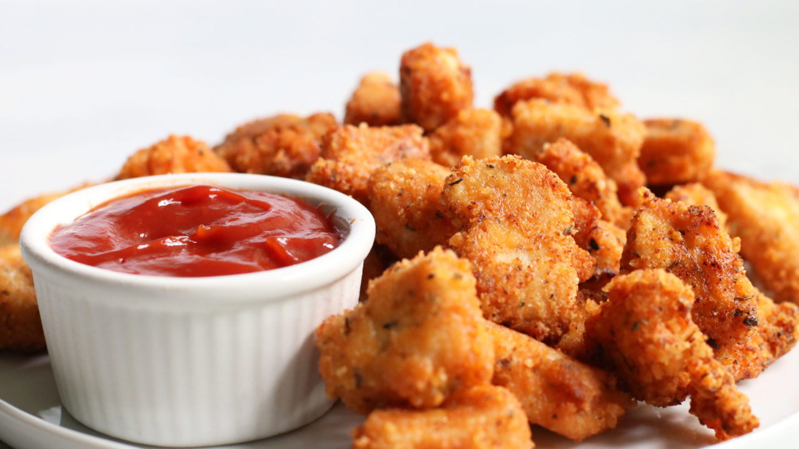

Nutrition
Not only are chicken nuggets delicious, but they are also nutritious! They have nutrients such as 2% iron and 3.1 grams of protein. Heavy on the 2% iron because I am anemic. If I eat 50 chicken nuggets, I can get up to 100% .

Delicious
Onto the delicious part of chicken nuggets, I have a lot to say. The first bite is good, but the second one is even better. As you bite into the chicken nugget, your teeth touch the crisp coating of oil and batter, and then emerge into the soft, processed chicken. You go in with the sauce, whether it be barbeque or buffalo, and feel the taste melt in your mouth. 